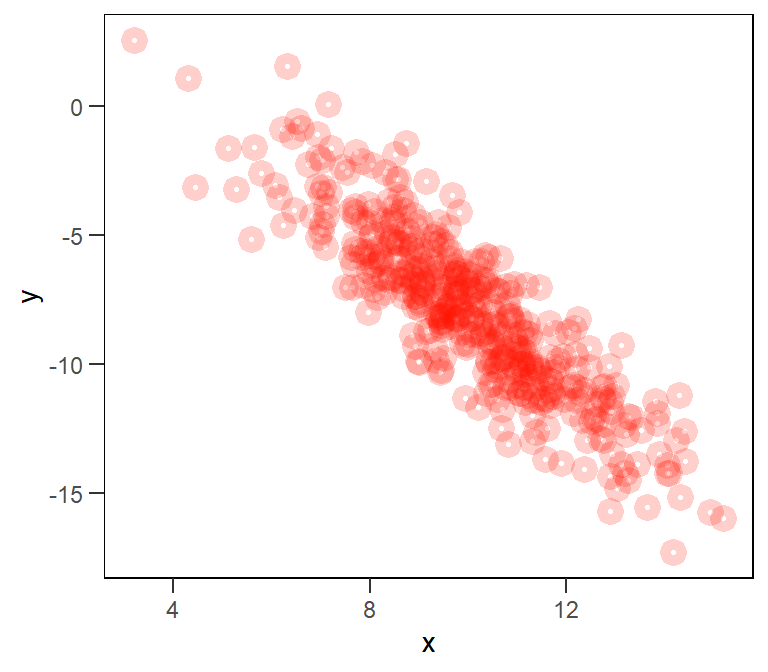

Prologue
Conventional statistics course that I’ve taken in the past have been incredibly unsatisfying. The material was dry and technical and this made only a very small portion of the content seem all that practical.
I believe the essential problem with most conventional statistics courses is that they tend to emphasize statistical theory over statistical practice. This makes doing statistics feel very static, despite the reality that data analysis is a dynamic, iterative process.
Fast forward to 2023 and I’m having students and colleagues ask me modeling questions that they clearly didn’t have answered in their analytical training. They want to know which “test” to run and which buttons to click. Each conversation I have like this gives more motivation to help researchers shift from testing to modeling.
The goal of this post is to start developing some primers for statistical models. Each post in this series will use simulation to understand a different model family in generalized linear modeling.
Background
Whether I’m working on Bayesian or frequentist models, the analytical workflow that I use today is based on the free lectures provided by Richard McElreath based on his book Statistical Rethinking. They are fantastic and mind opening.
Getting started
Let’s begin by just thinking about the mechanics of a linear model. First let’s look at the equation for such a model:
\[Y_i = \beta_0 + \beta_1 X_i\] This equation looks more formidable than it is. The placeholders \(X_i\) and \(Y_i\) represent variables. These are values that we will include in the model from our data. The little \(i\) is an index; you can sort of think of it like row \(i\). When you are viewing an equation, you can look for these indices to determine which parameters of the equation are likely to vary.
The greek letters are parameters that we estimate. In this case, \(\beta_0\) is an intercept parameter – the expected mean value when \(X_i\) is 0. You’ll also see this parameter symbolized with the greek letter \(\alpha\). The \(\beta_1\) parameter is a slope, a scalar that influences the relationship between \(X_i\) and \(Y_i\).
Simulating variables
We won’t be working with data at the moment. Instead we will simulate. So let’s start with \(X\). Let’s imagine we have a variable with a mean value of 10 and a standard deviation of 2.
N = 400
x = rnorm( n=N, mean=10, sd=2 )Having generated this variable x using random numbers from a Gaussian distribution, we get something similar to a bell shaped curve.
Now let’s do the same for \(Y\), using a mean of 7 and a standard deviation of 1.5.
y = rnorm( n=N, mean=7, sd=1.5 )Now what happens if we plot the association between these two variables?
Because both x and y were generated independent of each other, there is no discernible relationship between them. This implies that the estimated value of \(\beta_1\) will be near 0. We can confirm this with a model.
d = data.frame(x,y)
model1 = glm( formula = y ~ x, data=d, family = gaussian )
summary(model1)
Call:
glm(formula = y ~ x, family = gaussian, data = d)
Deviance Residuals:
Min 1Q Median 3Q Max
-3.9943 -0.9382 -0.0495 0.9391 3.9720
Coefficients:
Estimate Std. Error t value Pr(>|t|)
(Intercept) 6.81178 0.32457 20.99 <2e-16 ***
x 0.03053 0.03181 0.96 0.338
---
Signif. codes: 0 '***' 0.001 '**' 0.01 '*' 0.05 '.' 0.1 ' ' 1
(Dispersion parameter for gaussian family taken to be 1.800798)
Null deviance: 718.38 on 399 degrees of freedom
Residual deviance: 716.72 on 398 degrees of freedom
AIC: 1374.4
Number of Fisher Scoring iterations: 2Indeed, the coefficient esimate for x – the slope – is just about 0. And because the relationship is pretty much non-existent, the intercept parameter \(\beta_0\) is estimated to be approximately the mean value for y.
Form a relationship
So how would we go about linking x and y? Well we need to provide value for the slope parameter. I find this a bit easier to think about if we write a function.
linear = function( x, b0, b1 ) {
y = b0 + b1*x
data.frame(x,y)
}Now suppose we want there to be a negative relationship between x and y. We need to provide a negative value for b1.
x = rnorm( n=N, mean=10, sd=2 )
sim1 = linear( x=x, b0 = 7, b1 = -1.5 )Notice that we dont actually provide a vector of Y values this time. This is because they are generated by the function, rather than by sampling from a Gaussian distribution.
Let’s plot these results and see what we find.
So we have enforced a perfect linear relationship between x and y. But wouldn’t we have expected a bit more variation rather than a perfect line? Indeed, in a sense we have lost the sd = 1.5 that we originally included when we generated y the first time. To include it, we need a different equation.
\[Y_i = \beta_0 + \beta_1 X_i + e_i\] This term \(e_i\) is an “error” term. It is the residual deviance that is left unexplained by the other parameters in the equation.
Let’s think about this another way. The original mean and sd used in y = rnorm(N, 7, 1.5) has been moved to the \(\beta_0\) and the \(e_i\). We no longer supply the mean, but instead we estimated it as \(\beta_0\) with some residual error, \(e_i\) left over.
Let’s amend our function.
linear = function( x, b0, b1, e ) {
y = b0 + b1*x + e
data.frame(x,y)
}Now let’s supply a constant value for e in this function; how about 1.5 like we used before?
x = rnorm( n=N, mean=10, sd=2 )
sim1 = linear( x=x, b0 = 7, b1 = -1.5, e = 2 )That did really work did it. Why not? Well if we look a bit closer, we see that all that has happened is the value 2 was added on at the end. This is effectively like setting b0 to 9 instead of 7. What really need is a distribution of error, centered on 0 and deviating by 1.5.
x = rnorm( n=N, mean=10, sd=2 )
e = rnorm( n=N, mean=0, sd=1.5 )
sim1 = linear( x=x, b0 = 7, b1 = -1.5, e=e )
That looks a bit more like what we might expect. But if it really is true that we’re just adding some error onto the end, we could get the same result if we don’t use e at all and instead supply our original y generated with rnorm in place of b0.
x = rnorm( n=N, mean=10, sd=2 )
sim1 = linear( x=x, b0 = rnorm( n=N, mean=7, sd=1.5), b1 = -1.5, e=0 )This just shows that the generative process will work the same way. However, in practice, it will still be useful to use e. In future example, we might return to this approach as a way to created random intercepts.
Fit the model again
Now that we have out generated data set, let’s try rerunning the glm from above.
model1 = glm( formula = y ~ x, data=sim1, family = gaussian )
summary(model1)
Call:
glm(formula = y ~ x, family = gaussian, data = sim1)
Deviance Residuals:
Min 1Q Median 3Q Max
-5.156 -0.926 0.071 1.025 5.219
Coefficients:
Estimate Std. Error t value Pr(>|t|)
(Intercept) 7.20368 0.35680 20.19 <2e-16 ***
x -1.51101 0.03502 -43.15 <2e-16 ***
---
Signif. codes: 0 '***' 0.001 '**' 0.01 '*' 0.05 '.' 0.1 ' ' 1
(Dispersion parameter for gaussian family taken to be 2.209865)
Null deviance: 4993.90 on 399 degrees of freedom
Residual deviance: 879.53 on 398 degrees of freedom
AIC: 1456.3
Number of Fisher Scoring iterations: 2This time, we recover our slope parameter \(\beta_1\) and we more accurately recover our intercept parameter \(\beta_0\).